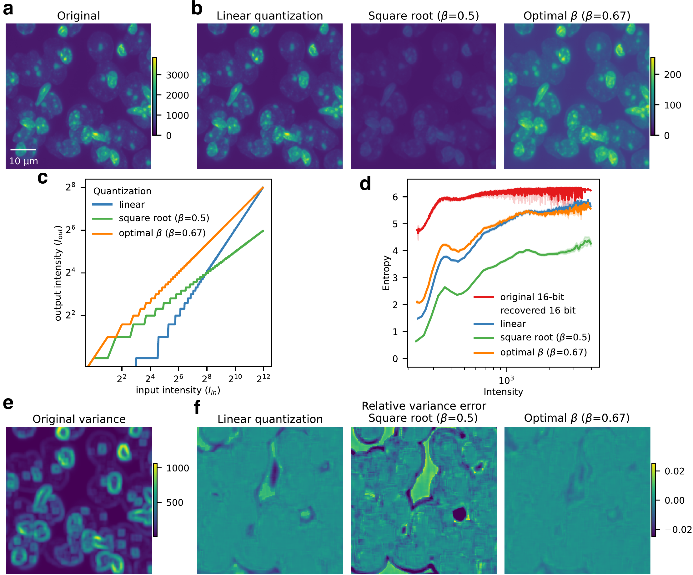
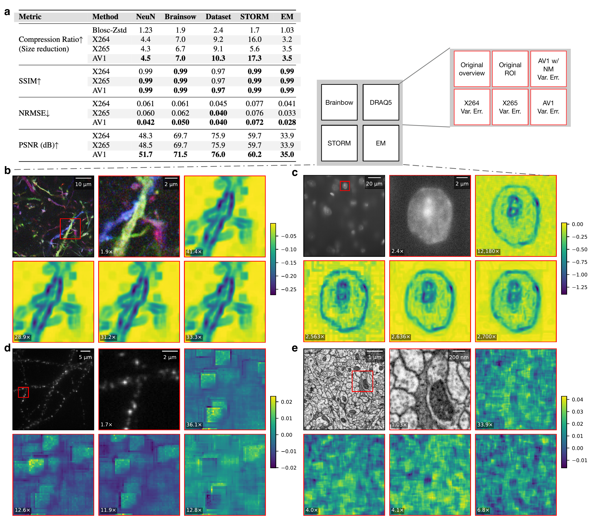
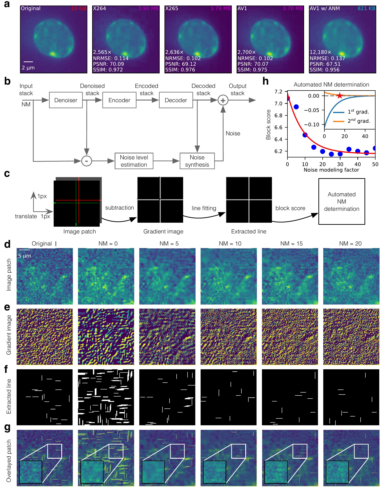
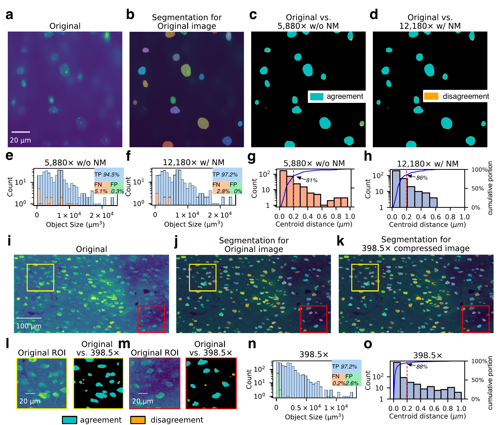
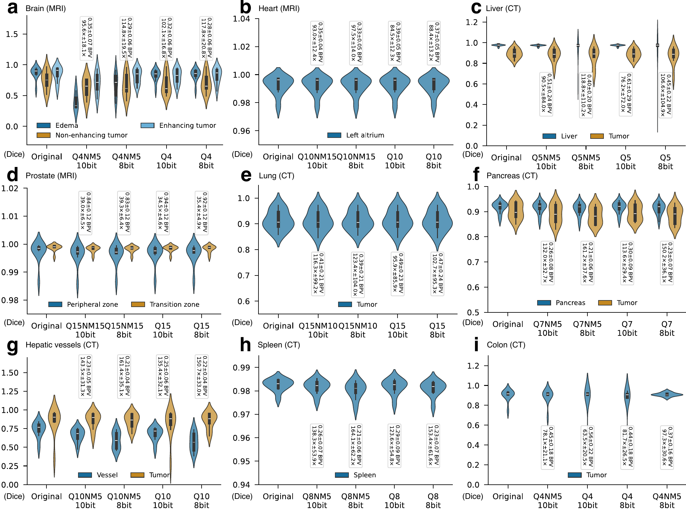

Abstract
Recent advances in microscopy have driven imaging data generation to unprecedented scales. While higher spatiotemporal resolutions and larger imaging volumes benefit science, the growing data size poses major challenges for storage and sharing. Lossless compression typically achieves less than 4× reduction, while lossy compression—despite far greater ratios—has seen limited adoption due to information-loss concerns and the difficulty of automated parameter selection.
We address these challenges with a generalized power-function (beta) quantization method paired with the AV1 video codec to achieve high-ratio, high-fidelity compression. We further develop a novel artifact metric and an automated algorithm to determine optimal compression parameters that preserve quantification fidelity. Our approach reaches compression ratios from tens to hundreds of times across imaging modalities while maintaining visual quality and downstream analysis accuracy. For nucleus segmentation, 3D images were compressed by more than 10,000× while retaining ~94% voxel-level agreement with the original segmentations. To facilitate adoption, we provide an HDF5 filter with FFMPEG integration, enabling seamless AV1 support in existing ImageJ/Fiji plugins so researchers can handle terabyte-scale datasets while preserving high-fidelity quantification.
Key Contributions
- Optimal beta quantization A generalized power-function quantization that maximally preserves the information critical for quantitative analysis while reducing image bit-depth.
- AV1 as the optimal codec Paired with beta quantization, AV1 delivers the best high-ratio, high-fidelity trade-off—outperforming H.264/H.265 and JPEG2000, and excelling on low-illumination microscopy via film-grain noise modeling.
- Artifact metric + automated parameter selection A novel block-artifact score and an automated algorithm that determine optimal compression parameters, replacing arbitrary, time-consuming trial-and-error.
- Community tools An HDF5 filter with FFMPEG integration and an ImageJ/Fiji plugin for compressing and visualizing terabyte-scale datasets across imaging modalities.
Results





Resources
Paper PDF →
Full manuscript with methods, figures, and supplementary results.
HDF5 Filter (FFMPEG) →
AV1 compression filter for HDF5 enabling terabyte-scale dataset handling.
ImageJ / Fiji Plugin →
Pre-built binaries (Windows, Ubuntu, macOS ARM64) installed via ImageJ update sites for seamless compression and visualization in existing workflows.
Benchmark Datasets
NeuN, Brainbow, DRAQ5, EM, and STORM imaging benchmarks. Link to be added.
Citation
@article{duan2026artifact,
title = {Artifact-Minimized High-Ratio Lossy Image Compression
with Preserved Analysis Fidelity},
author = {Duan, Bin and Walker, Logan A. and Xie, Bin and
Lee, Wei Jie and Lin, Alexander and Yan, Yan and Cai, Dawen},
year = {2026},
}